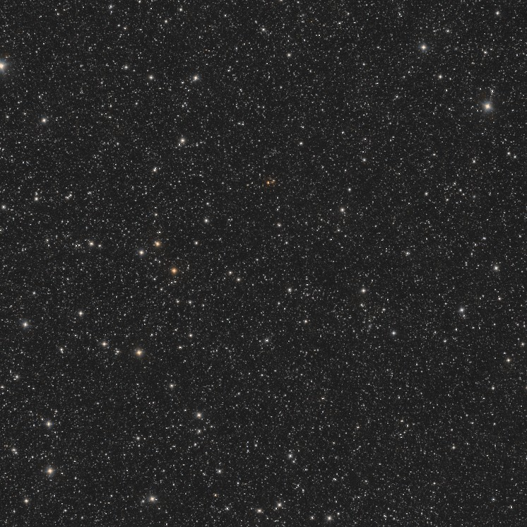

The expansion has no center
Click anything in the frame. It stays where it is and the whole sky moves away from it — then click something else, and that becomes the center instead
Two copies of the same sky map are stacked here. One is the sky as it is; the other is the same sky uniformly expanded, every separation multiplied by the same factor. Nothing is added, moved by hand, or singled out. Click anything and the expanded copy is scaled about that point, so the two copies agree there and disagree everywhere else. That object sits still. Everything else slides outward, and the further away it started, the further it goes.

unWISE field: a 4° infrared field at RA 269.730°,
Dec +66.020° — galactic latitude +30°, well off the plane —
from the DESI
Legacy Imaging Surveys viewer, unWISE/NEOWISE W1+W2 at 19.3″ per pixel.
This is the infrared photometry the Legacy Surveys provide for DESI target selection;
the frame holds galaxies together with foreground Milky Way stars.
COSMOS field: a deep coadd of LSST Camera observations in Sextans,
released for Early Data Preview 2 —
Rubin Looks Deep Into a
Famous Cosmic Field. Credit: NSF–DOE Vera C. Rubin
Observatory/NOIRLab/SLAC/AURA. It is crowded with galaxies and galaxy clusters across
an enormous range of distances; only a handful of foreground stars belong to our own
Milky Way.
This follows a demonstration by Viktor T. Toth —
why
cosmic expansion has no center — who is clear that the idea itself is an old
one. His uses a synthetic star field and asks you to drag one copy into alignment;
here the alignment is exact, about whichever object you click.
Why everything looks like the center
Expansion multiplies every separation by the same factor. If two galaxies were d apart and the universe grows by 7%, they are now 1.07d apart, so they separated by 0.07d. One twice as far away separated twice as much. That is Hubble's law, and it is what you are watching: the counterparts near your chosen object barely move, and the ones at the edge of the frame move a long way.
The point is what happens when you click a different object. Nothing about the map changed — the same uniform expansion, the same factor — yet the new one now sits still while the old one races away. Both descriptions are correct simultaneously, which is only possible if neither star is special. An observer on any of them would measure everything receding, and would be entitled to think themselves at the center. That is why the question where did the Big Bang happen has no answer of the form over there: it happened everywhere, and every observer sees the recession from their own vantage.
What the demonstration is and is not. In the COSMOS field these really are distant galaxies, and galaxies at those separations do recede from one another — so the picture is of the right objects. But it is still a picture of the geometry rather than a movie of this field: galaxies bound into a cluster stay bound, foreground Milky Way stars sit in the frame, and nothing here has been observed to move. The same applies to the unWISE sky, which mixes galaxies with foreground stars — anything bound, to the Milky Way or to a cluster, is not carried apart by the expansion at all. What the two copies show is that uniform expansion looks the same from every point inside it — and a real sky is more convincing than a scatter of dots. For the actual measurement of the expansion at many redshifts, see baryon acoustic oscillations.